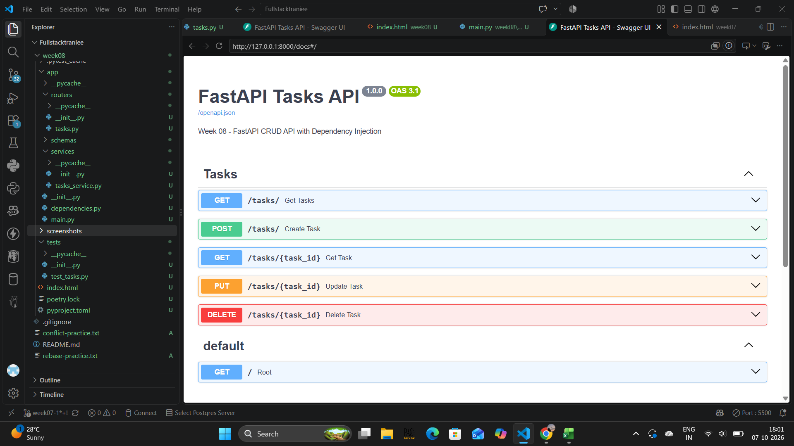
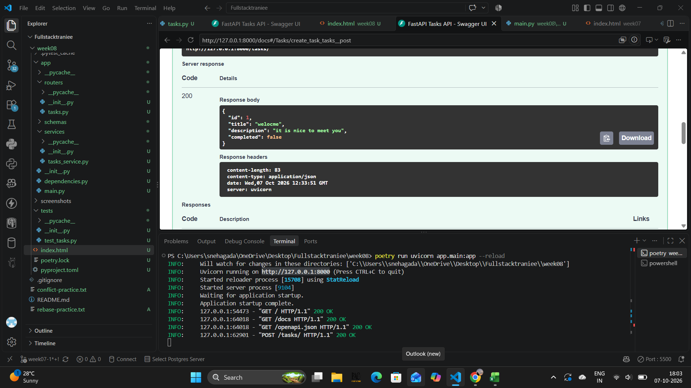
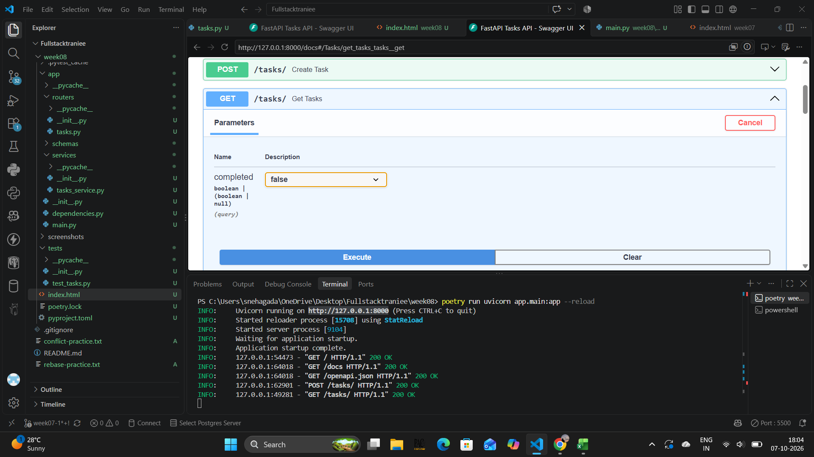
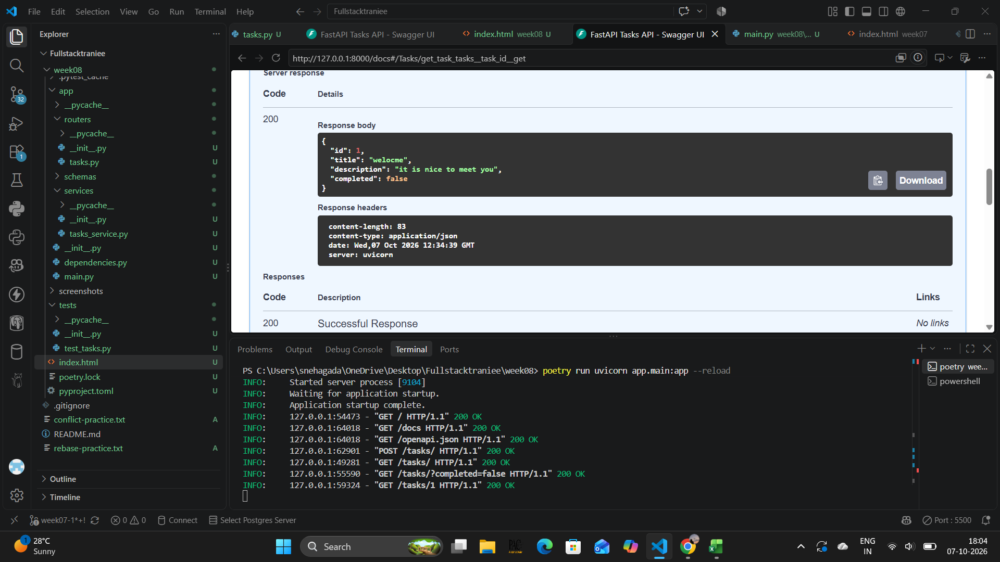
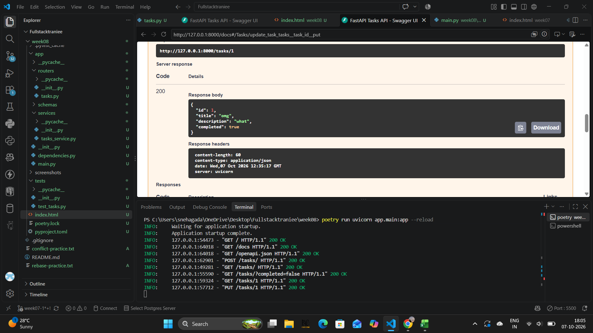
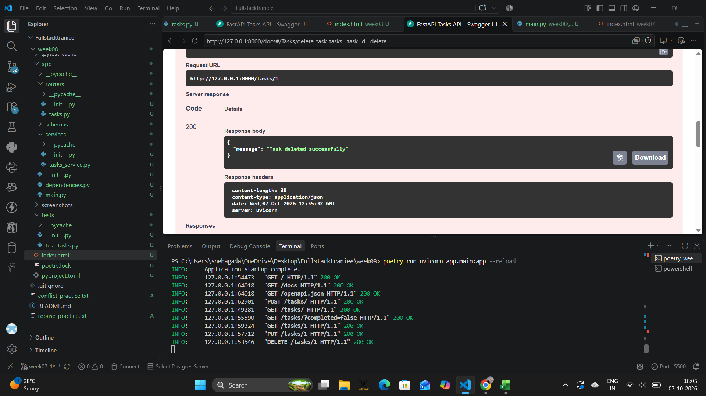
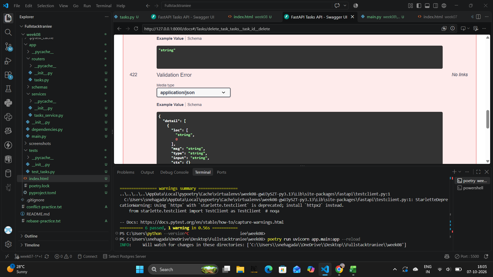

About the Assignment
This assignment demonstrates the fundamentals of FastAPI by building a Tasks API using an in-memory data store. The project also demonstrates Pydantic schemas, dependency injection, modular routing and automated testing.
1. Swagger UI
FastAPI automatically provides interactive API documentation through Swagger UI. The available task endpoints can be tested directly from the browser.

2. Create Task - POST
The POST endpoint uses a Pydantic request body to create a new task.

3. Get Tasks - Query Parameter
The GET endpoint supports a query parameter to filter tasks based on their completed status.
Example: /tasks/?completed=false

4. Get Task by ID - Path Parameter
The task ID is received as a path parameter and is used to retrieve a specific task.
Example: /tasks/1

5. Update Task - PUT
The PUT endpoint demonstrates the use of both a path parameter and a Pydantic request body to update an existing task.

6. Delete Task - DELETE
The DELETE endpoint removes a task using its task ID.

7. Dependency Injection
FastAPI's Depends() is used to inject the TasksService into route handlers.
This separates the API route layer from the business logic implemented inside TasksService.
The dependency can also be replaced during testing using app.dependency_overrides.
8. Automated Tests
The API was tested using FastAPI TestClient and Pytest. The tests also demonstrate dependency overriding with a FakeTasksService.

9. Assignment Requirements Completed
- FastAPI application
- Path parameters
- Query parameters
- Request body parameters
- Pydantic request and response schemas
- CRUD operations
- APIRouter modular routing
- Dependency Injection using Depends()
- TasksService for business logic
- Separation of route handlers and business logic
- Swagger UI and ReDoc documentation
- Dependency override for testing
- Fake service for tests
- Automated tests using Pytest